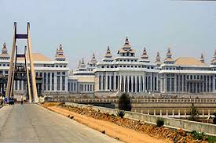

Nay Pyi Taw
Naypyidaw, officially spelled Nay Pyi Taw (Burmese: နေပြည်တော်), is the capital and third-largest city of Myanmar. The city is located at the center of the Naypyidaw Union Territory. It is unusual among Myanmar's cities, as it is an entirely planned city outside of any state or region. Similar planned cities include Canberra in Australia, Brasília in Brazil, Washington, D.C. in the United States, Islamabad in Pakistan, and Abuja in Nigeria. The city officially replaced Yangon as the administrative capital of Myanmar in 2006. As the seat of the government of Myanmar, Naypyidaw is the site of the Union Parliament, the Supreme Court, the Presidential Palace, the official residences of the Cabinet of Myanmar and the headquarters of government ministries and military. Naypyidaw is notable for its unusual combination of large size and very low population density. The city hosted the 24th and 25th ASEAN Summit, the 3rd BIMSTEC Summit, the Ninth East Asia Summit, and the 2013 Southeast Asian Games.
Yangon
 Yangon ( Burmese: ရန်ကုန်; pronunciation; lit. 'End of Strife'), also known as Rangoon, is the capital of the Yangon Region and the largest city of Myanmar (also known as Burma). Yangon served as the capital of Myanmar until 2006, when the military government relocated the administrative functions to the purpose-built capital city of Naypyidaw in north central Myanmar. With over 5 million people, Yangon is Myanmar's most populous city and its most important commercial centre.
Yangon boasts the largest number of colonial-era buildings in Southeast Asia, and has a unique colonial-era urban core that is remarkably intact. The colonial-era commercial core is centered around the Sule Pagoda, which is reputed to be over 2,000 years old. The city is also home to the gilded Shwedagon Pagoda – Myanmar's most sacred Buddhist pagoda.
Yangon suffers from deeply inadequate infrastructure, especially compared to other major cities in Southeast Asia. Though many historic residential and commercial buildings have been renovated throughout central Yangon, most satellite towns that ring the city continue to be profoundly impoverished and lack basic infrastructure.
Yangon ( Burmese: ရန်ကုန်; pronunciation; lit. 'End of Strife'), also known as Rangoon, is the capital of the Yangon Region and the largest city of Myanmar (also known as Burma). Yangon served as the capital of Myanmar until 2006, when the military government relocated the administrative functions to the purpose-built capital city of Naypyidaw in north central Myanmar. With over 5 million people, Yangon is Myanmar's most populous city and its most important commercial centre.
Yangon boasts the largest number of colonial-era buildings in Southeast Asia, and has a unique colonial-era urban core that is remarkably intact. The colonial-era commercial core is centered around the Sule Pagoda, which is reputed to be over 2,000 years old. The city is also home to the gilded Shwedagon Pagoda – Myanmar's most sacred Buddhist pagoda.
Yangon suffers from deeply inadequate infrastructure, especially compared to other major cities in Southeast Asia. Though many historic residential and commercial buildings have been renovated throughout central Yangon, most satellite towns that ring the city continue to be profoundly impoverished and lack basic infrastructure.
Mandalay
 Mandalay ( Burmese: မန္တလေး ) is the second-largest city in Myanmar, after Yangon. Located on the east bank of the Irrawaddy River, 716 km (445 mi) north of Yangon, the city has a population of 1,225,553 (2014 census).
Mandalay was founded in 1857 by King Mindon, replacing Amarapura as the new royal capital of the Konbaung dynasty. It was Burma's final royal capital before the kingdom's annexation by the British Empire in 1885. Under British rule, Mandalay remained commercially and culturally important despite the rise of Yangon, the new capital of British Burma. The city suffered extensive destruction during the Japanese conquest of Burma in the Second World War. In 1948, Mandalay became part of the newly independent Union of Burma.
Today, Mandalay is the economic centre of Upper Myanmar and considered the centre of Burmese culture. A continuing influx of Chinese immigrants, mostly from Yunnan, in the past 20 years, has reshaped the city's ethnic makeup and increased commerce with China. Despite Naypyidaw's recent rise, Mandalay remains Upper Burma's main commercial, educational and health center.
Mandalay ( Burmese: မန္တလေး ) is the second-largest city in Myanmar, after Yangon. Located on the east bank of the Irrawaddy River, 716 km (445 mi) north of Yangon, the city has a population of 1,225,553 (2014 census).
Mandalay was founded in 1857 by King Mindon, replacing Amarapura as the new royal capital of the Konbaung dynasty. It was Burma's final royal capital before the kingdom's annexation by the British Empire in 1885. Under British rule, Mandalay remained commercially and culturally important despite the rise of Yangon, the new capital of British Burma. The city suffered extensive destruction during the Japanese conquest of Burma in the Second World War. In 1948, Mandalay became part of the newly independent Union of Burma.
Today, Mandalay is the economic centre of Upper Myanmar and considered the centre of Burmese culture. A continuing influx of Chinese immigrants, mostly from Yunnan, in the past 20 years, has reshaped the city's ethnic makeup and increased commerce with China. Despite Naypyidaw's recent rise, Mandalay remains Upper Burma's main commercial, educational and health center.